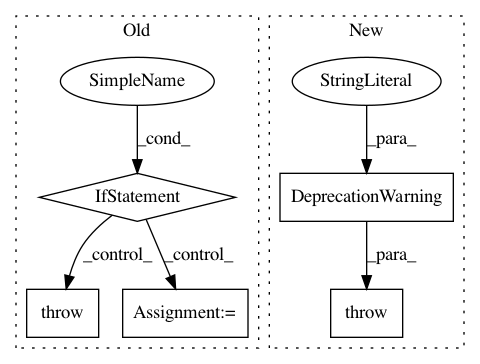

4ad79ca963015c14ef202100c7db6ed5bd29d884,python/ray/parameter.py,RayParams,__init__,#RayParams#Any#Any#Any#Any#Any#Any#Any#Any#Any#Any#Any#Any#Any#Any#Any#Any#Any#Any#Any#Any#Any#Any#Any#Any#Any#Any#Any#Any#Any#Any#Any#Any#Any#Any#Any#Any#Any#Any#Any#Any#Any#Any#Any#Any#Any#Any#,112
Before Change
self._check_usage()
// Set the internal config options for LRU eviction.
if lru_evict:
// Turn off object pinning.
if self._system_config is None:
self._system_config = dict()
if self._system_config.get("object_pinning_enabled", False):
raise Exception(
"Object pinning cannot be enabled if using LRU eviction.")
self._system_config["object_pinning_enabled"] = False
self._system_config["free_objects_period_milliseconds"] = 1000
// Set the internal config options for object reconstruction.
if enable_object_reconstruction:
// Turn off object pinning.
if self._system_config is None:
self._system_config = dict()
After Change
// Set the internal config options for LRU eviction.
if lru_evict:
raise DeprecationWarning(
"The lru_evict flag is deprecated as Ray natively "
"supports object spilling. Please read "
"https://docs.ray.io/en/master/memory-management.html//object-spilling " // noqa
"for more details.")
// Set the internal config options for object reconstruction.
if enable_object_reconstruction:
// Turn off object pinning.
In pattern: SUPERPATTERN
Frequency: 3
Non-data size: 5
Instances
Project Name: ray-project/ray
Commit Name: 4ad79ca963015c14ef202100c7db6ed5bd29d884
Time: 2021-02-15
Author: rkooo567@gmail.com
File Name: python/ray/parameter.py
Class Name: RayParams
Method Name: __init__
Project Name: ray-project/ray
Commit Name: 415be78cc0d1275a29d0ceda550d0d7a7a5224ea
Time: 2020-09-08
Author: amogkam@users.noreply.github.com
File Name: python/ray/util/sgd/torch/torch_trainer.py
Class Name: TorchTrainer
Method Name: __init__
Project Name: ray-project/ray
Commit Name: 92718de40c6ee67e37b25988d7f3c9f72df4dcb4
Time: 2020-11-04
Author: amogkam@users.noreply.github.com
File Name: python/ray/util/sgd/torch/torch_trainer.py
Class Name: TorchTrainer
Method Name: __init__